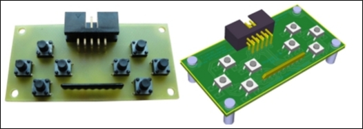
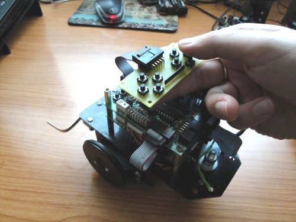
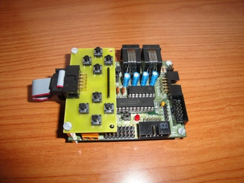
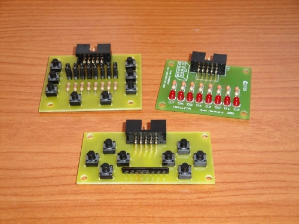

Publicado el primer prototipo de la Skypads 2.0. Es una tarjeta con 8 pulsadores distribuidos en dos grupos de cuatro, con forma de cruceta. Aunque se puede usar como una placa genérica de pruebas con pulsadores, está pensada para controlar robots como si fuese un mando de una consola 😉 Así es mucho más fácil que usar tarjetas genéricas como la Skypads 1.0.

La Skypads 2.0 tiene una longitud igual a la anchura de la Skypic, por lo que se puede atornillar encima de ella. Así es más cómodo para hacer pruebas:

En esta foto se han reunido varios periféricos para la Skypic: Skypads 1.0, Skypads 2.0 y Freeleds:

La Skypads 2.0 es hardware libre 2, diseñada con Kicad